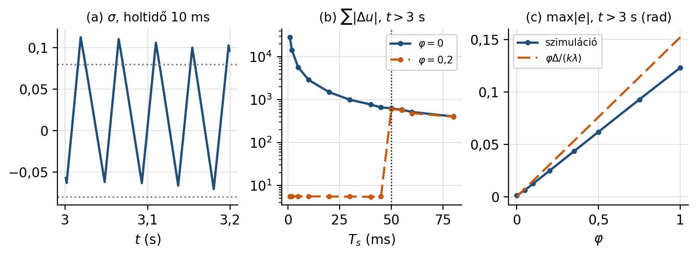

A Visszacsatolásos linearizálás akkor adott
szép, lineáris viselkedést, ha a modell pontos volt. Mi történik, ha az
inga gravitációs tagját
-kal
alábecsüljük, a súrlódást egyáltalán nem modellezzük, és ráadásul egy
alakú zavaró nyomaték is hat? A linearizáló törvény egy PD külső
hurokkal (kettős pólus
-ban)
még
s után is akár
rad
()
hibával követi az
radiános alapjelet.
A csúszómódú szabályozás (sliding mode control) más
stratégiát követ: nem próbálja pontosan kiejteni a bizonytalanságot,
hanem túlerővel legyőzi. Egy jól választott felület két
oldalán ellentétes irányban, teljes erővel avatkozik be, ezért az
állapot rákényszerül a felületre, és ott „csúszik” a célig. Az ár a
gyors kapcsolgatás (chattering), amelyet ebben az
alfejezetben megértünk és kezelünk. A módszer különösen ott népszerű,
ahol a beavatkozó természeténél fogva kapcsol (teljesítményelektronika,
kapcsolóüzemű motormeghajtás), és ahol a paraméterek tág határok között
változnak.
25.4.2 Szemlélet: felület, amelyre
rá kell kerülni
Legyen a hiba
.
A másodrendű rendszerre vezessünk be egyetlen skalár
csúszóváltozót:
A
egy egyenes az
síkon: a csúszófelület. Ha az állapot rajta van, akkor
,
azaz
egy
időállandójú elsőrendű rendszerként tűnik el – függetlenül a tömegtől, a
súrlódástól és a zavartól. A feladat tehát két részre bomlik:
elérési szakasz: jussunk véges idő alatt a
felületre;
csúszó szakasz: maradjunk rajta; ott a viselkedést
csak a
szabja meg.
Mielőtt tovább olvasol, tippeld meg: ha a felületről mindkét irányba
teljes erővel lökjük vissza az állapotot, hogyan néz ki a beavatkozó jel
a csúszó szakaszban?
Statikus változat (mint a PDF-ben)
Csúszómód az ingán: (a) hibasík a csúszófelülettel és a
határréteggel; (b) a csúszóváltozó; (c) a szöghiba; (d) a beavatkozó
jel. Az előjeles kapcsolás, a határréteges változat és a linearizáló PD
összehasonlítása
Az (a) panelen mindkét csúszómódú változat egyenesen a felületre fut,
majd rajta halad. A (d) panel mutatja az árat: az előjeles szabályozó a
mintavétel ütemében váltogat
között.
25.4.3 Elérési feltétel és a
szabályozó
Hogyan garantáljuk, hogy az állapot a felületre jut? Alkalmazzuk a Ljapunov-stabilitás módszerét a
függvényre.
.
Definíció (elérési feltétel). Valamely
mellett
Szavakkal:
legalább
sebességgel csökken. Ezért
véges időn belül nullává válik, legkésőbb
időben. Ez erősebb, mint az aszimptotikus stabilitás: az exponenciális
lecsengés sosem ér pontosan nullába, ez viszont igen.
A szabályozó levezetése. Tekintsük az
rendszert, ahol
-et
csak közelítőleg ismerjük
(),
a
zavart nem. Deriváljuk
-t
állandó vagy kétszer deriválható
mellett:
Válasszuk a bemenetet úgy, hogy az ismert tagokat kiejtsük, és adjunk
hozzá egy kapcsoló tagot:
Behelyettesítve:
Jelölje
a bizonytalanság korlátját:
.
Ekkor
,
vagyis
Tétel. Ha
,
az elérési feltétel teljesül, a rendszer véges időben a felületre ér és
rajta marad, majd
exponenciálisan,
sebességgel tart nullához. [S-SLOTINE]
A
korláthoz nem kell pontos modell, csak a hiba nagyságrendje. Az ingán
(alsó koordináták)
,
a modell
,
ezért
.
Ha
rad/s (várakozás, amelyet utólag ellenőrzünk),
,
és
mellett
.
A kezdeti
alapján
s. A szimulációban a sebesség legfeljebb
rad/s, a felületet
s körül éri el: a korlát igaz, de óvatos.
25.4.3.1 Az ekvivalens
beavatkozás
Mit „csinál” a vadul kapcsolgató jel, ha
közben alig mozdul? Ahhoz, hogy a felületen maradjunk,
kell, vagyis
Ez az ekvivalens beavatkozás (equivalent control):
az a sima jel, amellyel a pontos modell és a pontos zavar ismeretében a
felületen lehetne maradni. A kapcsoló jel ennek a rövid időre vett
átlaga. A szimulációban a
s körüli
s-os ablakban a
és
között ugráló jel átlaga
,
az
átlaga
,
a határréteges változat sima jele pedig
.
A csúszómód tehát „megtalálja” a zavart anélkül, hogy mérné; az
aluláteresztett
jelből a zavar becsülhető is.
A tervezés lépései ebben a sorrendben:
a kívánt csúszó dinamikából, a holtidő és a beavatkozó sávszélessége
alatt maradva (ökölszabályként
;
ellenőrizendő);
a
korlát becslése a modellhiba és a zavar tartományából;
,
az
-t
a kívánt elérési időből;
a telítés ellenőrzése:
és a kapcsoló tag együtt férjen a beavatkozó korlátai közé;
a megengedett hibából, majd a
és
feltételek ellenőrzése szimulációval.
25.4.3.2 Miért robusztus? Az
illesztett zavar
A zavar és a modellhiba ugyanazon a „csatornán” hat, mint a bemenet
(ugyanabba az egyenletbe kerül): ez az illesztett
(matched) bizonytalanság. A kapcsoló tag ezt teljesen kompenzálja. A
csúszó szakaszban a viselkedés
,
amelyben sem
,
sem
nem szerepel: a rendszer redukált rendű dinamikára
esett. A nem illesztett zavart (pl. egy másik egyenletben ható tagot) a
csúszómód magában nem tudja elnyomni (3. feladat).
25.4.4 Chattering: a kapcsolgatás
oka
Ideális esetben a
pontosan nulla maradna, végtelen gyors kapcsolással. A valóságban a
kapcsolás késik, és
a felület körül cikkcakkozik. Két fő forrás:
Mintavétel. A bemenet
ideig állandó, ezalatt
nagyjából
-et
változhat. A sáv tehát
-sel
arányos:
ms mellett a mért
,
ms mellett
.
Holtidő (számítás, kommunikáció, beavatkozó
dinamika). Ha a bemenet
-val
késik, a lényeg az egyszerű
modell. Ez éppen egy relés kör egyetlen integrátorral és holtidővel:
háromszög alakú határciklus
amplitúdóval és
periódussal. A Fázissík, egyensúlyi pontok és
határciklus leíró függvénye ugyanezt adja közelítőleg:
,
és az alapharmonikus amplitúdója
.
ms-ra az egyszerű modell
-at
és
ms-ot jósol; a teljes ingaszimuláció
-et
és
ms-ot ad (a maradék
az egyik irányban meredekebbé teszi a háromszöget).

Chattering: (a) háromszög alakú határciklus 10 ms holtidővel
(pontvonal: ±kθ); (b) a beavatkozó jel összes változása a mintavételi
idő függvényében; (c) a maradó hiba a határréteg vastagságával
nő
A kapcsolgatás miért baj? A beavatkozót (relé, motorvezérlő)
fárasztja, energiát veszít, és gerjeszti a modellből kihagyott gyors
dinamikát (rezonanciákat), ami instabilitást is okozhat.
25.4.4.1 Határréteg: telítő
függvény
A legegyszerűbb gyógymód: az előjelfüggvényt egy
félszélességű sávban lineárisra cseréljük,
A sávon kívül minden a régi, tehát az állapot ugyanúgy beér a
határrétegbe. Bent viszont
:
egy gyors elsőrendű rendszer, amely a zavart
erősítéssel engedi át. Állandósultan
A pontos konvergencia elveszik, cserébe sima a beavatkozó jel.
-nél
a maradék
(a pályán mért maximum) mellett a becslés
rad, a mért érték
rad; a
(3 és 5 s között)
-ról
-ra
esik.
Két feltétel korlátozza, mekkora lehet a határrétegen belüli
erősítés. Mintavételesen
,
ami csak
esetén stabil: itt
ms (a (b) panelen pontosan ott ugrik meg a kapcsolgatás). Holtidővel
,
ami
esetén stabil (5. feladat).
25.4.4.2 Kapcsolat más
módszerekkel
A tiszta előjeles törvény a
-ra
kapcsolt relé (Fázissík,
egyensúlyi pontok és határciklus), a határréteg a
telítés; a leíró függvény ezért a chattering
becslésének természetes eszköze. A határrétegen belül a törvény egy nagy
erősítésű PD-szabályozó
()
– a visszacsatolás régi dilemmája: a nagy erősítés elnyomja a zavart, de
zajt erősít és tartalékot fogyaszt. A magasabb rendű
csúszómód (például a super-twisting algoritmus) folytonos
beavatkozó jellel is pontos konvergenciát ad bizonyos feltételek
mellett; itt csak megemlítjük.
Többállapotú lineáris rendszer esetén a felület
,
ahol az
sorvektort úgy választjuk, hogy a csúszómódú
(
rendű) dinamikának előírt pólusai legyenek (Ackermann–Utkin-képlet:
linear_sliding_surface,
-re
normálva). A törvény
,
amellyel a névleges modellen
.
25.4.5 Kézi számpélda
Kettős integrátor:
,
,
.
Válasszuk
,
,
tehát
.
Kezdetben
,
.
.
A garantált elérési idő
s.
Zavar nélkül
,
tehát
,
és
s.
Az elérési szakaszban
.
Partikuláris megoldás:
;
a homogén rész
,
-ből
.
Tehát
.
A csúszó szakaszban
.
A
-os
sávba
()
s-kor ér.
A legrosszabb zavarral
()
,
s: éppen a korlát.
25.4.6 Kód
import numpy as npfrom controlkit import nonlinear as nlref = nl.reference_sliding_mode() # lambda=3, k=8, r=1, d=2 sin 2t, Ts=1 mskw =dict(plant=ref["plant"], model=ref["model"], r=ref["r"], d=ref["d"])for nev, k, phi, delay in (("előjel", 8, 0.0, 0.0), ("határréteg", 8, 0.2, 0.0), ("kevés k", 3, 0.2, 0.0), ("holtidő 10 ms", 8, 0.0, 0.01)): t, X, u, s = nl.simulate_smc(nl.SlidingMode(3.0, k, phi), 5.0, delay=delay, **kw) v = t >3.0print(f"{nev:14s} max|sigma| = {np.abs(s[v]).max():.4f}, "f"max|e| = {np.abs(X[v, 0] -1).max():.4f}, sum|du| = "f"{np.abs(np.diff(u[v])).sum():8.1f}")
„Előjel” gombbal indulj, majd állítsd
-t
-re:
a hibasík-beli pálya alig változik, de a
nagyságrendekkel csökken
(),
míg
-ről
radra nő.
„Kevés
”
():
az állapotsor jelzi, hogy nincs garancia. Figyeld, ahogy
elszakad a nullától. Mekkora
már elég?
mellett növeld
-t:
ms-nál még sima,
ms-nál
()
visszatér a kapcsolgatás.
„Holtidő 10 ms”: mérd meg a
amplitúdóját, majd duplázd a holtidőt. Arányos-e? Ezután adj
határréteget: miért tűnik el a cikkcakk?
25.4.8 Tipikus hibák
Túl kicsi
.
Tünet:
nem marad nulla környékén, nagy hiba zavarnál. Ok:
.
Javítás: a bizonytalanság korlátjának becslése és tartalék
();
túl nagy
viszont erősebb chatteringet ad.
Telítés figyelmen kívül hagyása. Tünet: a becsült
mellett sem teljesül az elérés. Ok:
korlát; a ténylegesen rendelkezésre álló „túlerő” kisebb. Javítás:
ellenőrizd, hogy
fedezi-e a
kiejtést és a
-t
együtt.
„A határréteg nem ront semmit.” Tünet: maradó hiba.
Ok: bent csak véges erősítésű a szabályozás. Javítás:
-t
a megengedett hibából számold
(),
vagy integráló taggal egészítsd ki a felületet.
A kapcsolás finomítása kizárólag
csökkentésével. Tünet: a chattering megmarad. Ok: a holtidő és
a beavatkozó dinamikája is számít. Javítás: a teljes hurok késleltetését
vedd figyelembe, és adj határréteget.
A derivált zajos mérése. Ha
zajos,
előjele véletlenszerűen vált. Javítás: megfigyelő vagy szűrő, de ennek
késleltetése is a chattering forrása.
25.4.9 Önellenőrzés
Mi történik a hibával, ha az állapot a
felületen marad?
Mit garantál az elérési feltétel, amit az aszimptotikus stabilitás
nem?
Milyen zavarokra robusztus a csúszómód, és miért?
Nevezz meg két okot a chatteringre.
Mit nyersz és mit veszítesz a határréteggel?
25.4.10 Feladatok
(A)
,
,
,
.
Mekkora
kell? Ha
,
,
mekkora a garantált elérési idő?
(A)
,
,
.
Mekkora határréteg engedhető meg, ha
rad a követelmény, és ehhez mekkora lehet legfeljebb
?
(B)
,
(
állandó), felület
.
Hová tart
?
Hogyan módosítanád a felületet, hogy nullára menjen?
(B)
ms holtidő,
,
.
Jósold meg a chattering amplitúdóját, periódusát és az alapharmonikus
amplitúdóját; hasonlítsd össze szimulációval.
(B) Mutasd meg, hogy
stabilitási határa
.
(C, programozós) Futtasd a referencia-példát
értékekkel, és rajzold fel a
és a
kompromisszumot. Melyik
-t
választanád, és miért?
25.4.11 Rövid összefoglaló
A csúszómódú szabályozás a
csúszófelületre kényszeríti az állapotot egy
törvénnyel. Ha
,
az elérési feltétel
teljesül, a felület legfeljebb
idő alatt elérhető, és ott a hiba
sebességgel, a modelltől és az illesztett zavartól függetlenül tűnik el.
Mintavétel és holtidő miatt a jel kapcsolgat (chattering); a határréteg
()
ezt megszünteti, cserébe
maradó hiba marad, és
szükséges. A relés kör és a leíró függvény a jelenség természetes
magyarázata.
25.4.12 Megoldások
.
,
s.
.
ms (gyakorlatban jóval kisebb, pl. felére).
Csúszómódban
(a
illesztett, elnyomódik), így
,
.
Integráló felület:
;
ekkor
mellett
,
,
egyensúlyban
(a
mellett stabil).
,
ms, alapharmonikus
.
Szimulációban (delay=0.005) a félamplitúdó
,
ms: a maradék
(akár
)
a meredekséget
-ra
növeli, és az
ms-os mintavétel is késleltet.
A karakterisztikus egyenlet
.
A határon
:
,
tehát
()
és
.
Így
;
itt
.
,
:
ms.
A nl.simulate_smc(nl.SlidingMode(3, 8, phi), 5, **kw)
hívás
értékei
(
s):
;
a
:
.
ms mellett már
sima jelet ad; zajos mérésnél vagy nagyobb késleltetésnél nagyobb
kell.
25.4.12.1 Válaszok az önellenőrző
kérdésekre
szerint exponenciálisan,
időállandóval tűnik el.
Véges idejű elérést, legfeljebb
alatt.
Az illesztett (a bemenettel egy csatornán ható) bizonytalanságra,
mert a kapcsoló tag nagyobb nála; a csúszó dinamikában nem
szerepel.
A mintavétel (ZOH) és a holtidő, illetve a modellezetlen beavatkozó
dinamika.
Sima beavatkozó jelet nyersz, a pontosságot (maradó hiba) veszíted,
és a
erősítés korlátot kap.